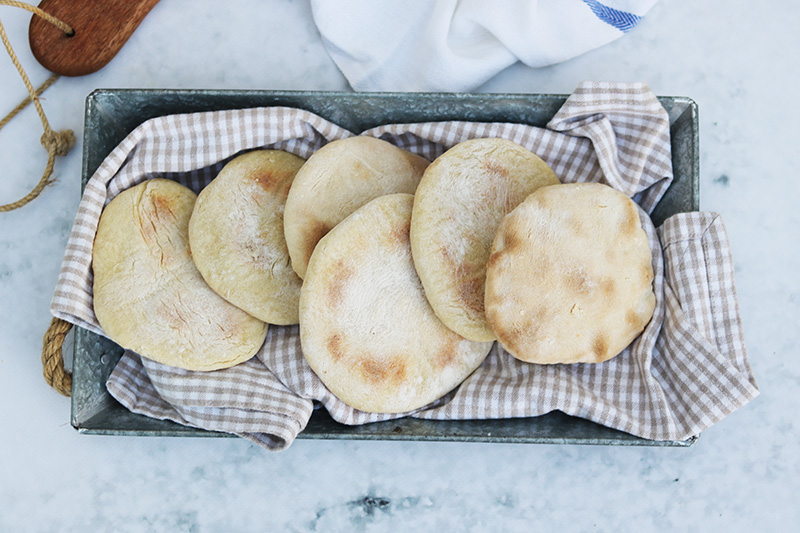

Receta de la semana
Como hacer pan de pita casero

| Dificultad |
Tiempo de preparación |
Cantidad aproximada |
| Facil |
30min |
13 panes |
Ingredientes
- 20gr levadura fresca
- 310ml agua
- 500gr harina de trigo
- 6 cdas. aceite de oliva
- 8gr de sal
Preparación
- Activar la Levadura y Mezclar Ingredientes: Disuelve la
levadura fresca en agua tibia en un bol grande, déjala reposar
hasta que espume, y luego añade la harina, el aceite de oliva y la sal,
mezclando hasta obtener una masa pegajosa.
- Amasar y Leudar la Masa: Amasa la masa en una superficie enharinada por
5-7 minutos hasta que esté suave y elástica. Luego,
colócala en un bol engrasado, cúbrela y deja leudar en un lugar
cálido durante 1 hora hasta que duplique su tamaño.
- Porcionar y Estirar: Divide la masa leudada en 6-8 porciones iguales,
forma bolas con cada una y estíralas con un rodillo hasta obtener círculos
de aproximadamente 15 cm de diámetro.
- Calentar y Cocinar en Sartén: Calienta una sartén antiadherente a
fuego medio-alto sin aceite. Una vez caliente, coloca un pan de pita.
- Inflar y Servir: Cocina cada pan de pita por 1-2 minutos por cada lado,
hasta que se dore y se infle. Retíralos de la sartén y envuélvelos en un
paño limpio para mantenerlos suaves antes de servir calientes.